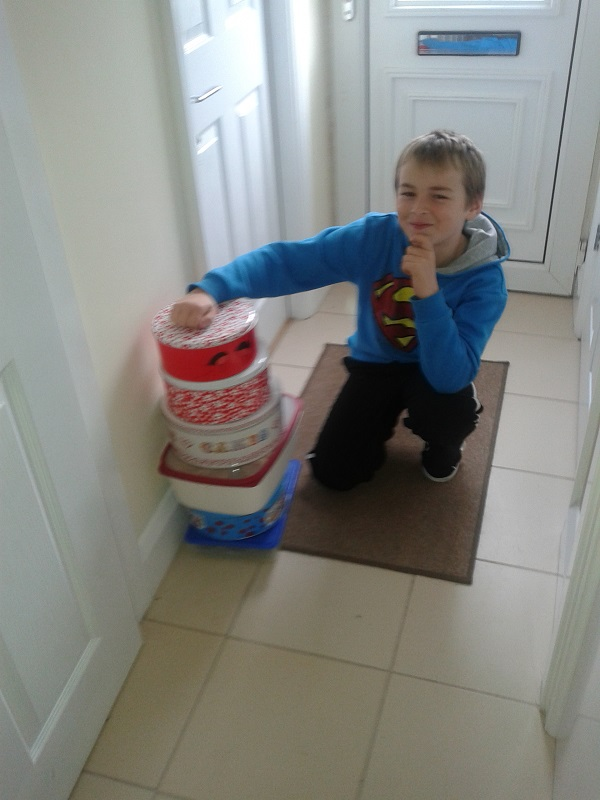

Leading the way: Fire House
Posted on February 19, 2014
by James Martin
The ‘house system’ of the school allows children to further develop team working and collaboration skills.
Children are left to manage and develop their houses with minimal intervention as long as they fulfil the criteria of benefit to:
- Member
- School
- Wider community
House Fire, Captained by Henry and Louis, orchestrated a cake bake to donate to the Friary drop-in centre within their community.

Hundreds of cakes cooked by the members found their way to the food kitchens to be distributed to vulnerable adults.
The instructors would like to thank Henry, Louis and members of House Fire for initiative and a great event to end our Kangeiko.